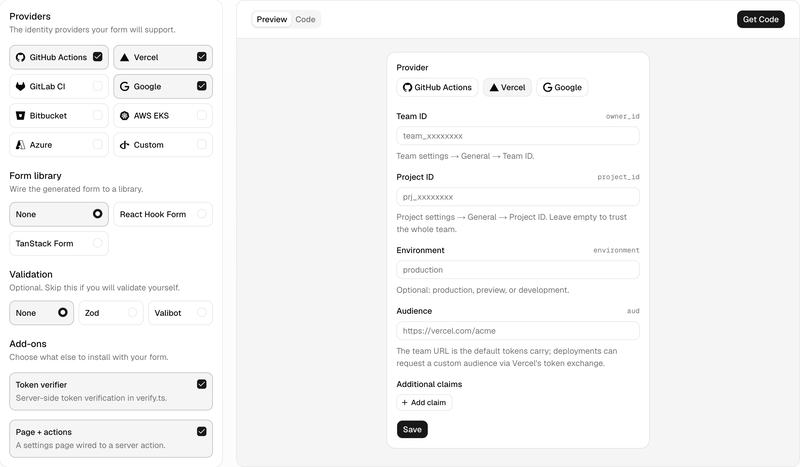

Feature 16 · VERBATIM · 2026 10
Death to long-lived static credentials
Fifteen years ago, TLS was something you’d use to protect the most sensitive areas of your app. Then Google, Let’s Encrypt, the EFF, and others led the push for HTTPS everywhere, making encryption the default for every request. Without it, anyone between the browser and server can read and tamper with the traffic.
OAuth, OIDC, DBSC, and related standards already provide building blocks for secure authentication, but standards alone do not make secure methods the norm. HTTPS needed tooling that made encryption easy and a sustained push that made it expected. Machine-to-machine authentication still resembles HTTPS in 2010, with some vendors and enterprises leading the way while long-lived static credentials remain the default for many SaaS vendors and infrastructure providers.
At Vercel, we want to make fast and secure the default across the web, including in our own services and the integrations in our Marketplace. We’ve built OIDC UI, a shadcn/ui registry that gives providers trust-policy forms and token verification code. We’re expanding OIDC support across Vercel and setting new authentication requirements for Marketplace providers.
Long-lived static credentials are insecure
Long-lived static credentials are secrets such as API keys and database passwords that applications keep reusing, often with no expiration. As agents take on more useful work, we give them access to our systems, tools, and data through credentials that can grant permissions far beyond the task at hand.
Those credentials can leak into a code repository or chat, be stolen when a service or dependency is compromised, or be exposed when prompt injection leads an agent to reveal them. However it happens, an attacker can use the credential with the permissions it grants until it expires or is revoked. Recent credential-theft and supply-chain incidents across the industry show why encryption at rest isn’t enough when malicious code can read an application’s credentials in production.
Rotating exposed credentials takes time and coordination across the systems that use them, and mistakes can disrupt production. At Vercel, we’ve previously spent thousands of engineering hours on multiple, very painful key rotations out of an abundance of caution, and we never want to have to do this again.
Better solutions already exist
With OIDC, your application can authenticate without storing a long-lived provider key. A trusted issuer provides a signed, short-lived token identifying the application, and the receiving service verifies that token before deciding what access to grant.
A stolen token stops working when it expires, limiting how long that copy can be used even if the leak goes unnoticed. Your application can obtain fresh credentials programmatically, removing the need to distribute and manually rotate a persistent provider key across the systems that use it.
We’ve been prioritizing OIDC across Vercel so applications can access Blob, AI Gateway, and Sandbox without storing long-lived keys for those services. Our OIDC federation has been generally available since 2024, letting applications running on Vercel exchange Vercel-issued identity tokens for temporary AWS, Google Cloud, and Azure credentials under configured project and environment trust policies. But for developers to stop managing long-lived keys, that support has to extend to all the services their applications depend on.
The rest of the web hasn’t followed
We surveyed more than 1,000 SaaS vendors and found that only 8.4% supported secure authentication methods.
But getting vendors to support secure authentication is only part of the problem. Even when a service offers a secure method, developers often choose a static key because it can be simpler to use. We see three main barriers to broader adoption:
Tooling and setup that make secure authentication more complicated than using a static key.
Added latency from fetching or exchanging tokens on the request path.
Weak incentives for vendors to offer and prioritize secure authentication.
Our goal is to make secure authentication the default on Vercel, while also using our Marketplace to help push more vendors to support it.
Our commitment to a more secure web
We have a responsibility to make this change practical across the services we run, the tools developers use, and the integrations we build with partners.
Make secure authentication easier to use
Using a secure token has to be easier than pasting a key, or developers will keep pasting keys. On Vercel, code retrieves an OIDC token with a function call, and a custom audience specifies the service intended to receive it.
With Vercel Connect, applications and agents use their deployment identity to request provider tokens at runtime, without having to store long-lived provider secrets in environment variables. Once the connector is configured and linked to the project and the user’s account is connected, code can request a token for that user with scopes the provider supports.
import { getToken } from '@vercel/connect';
const token = await getToken('oauth/linear', {
subject: { type: 'user', id: 'user_123' },
scopes: ['read'],
});
Requesting Linear access for a user through Vercel Connect
We’re also extending OIDC support across the Vercel API and CLI to remove the need for long-lived Vercel tokens in deployment workflows.
OIDC UI for API providers

OIDC UI is a shadcn/ui component registry with a trust-policy configurator and a server-side token verifier. It includes provider forms for Vercel, GitHub, GitLab, Google, Bitbucket, AWS, Azure, and custom OIDC issuers. A provider can let customers configure trust for a particular Vercel project’s production environment, then verify incoming tokens against that policy without building the configuration interface and verification code from scratch.
Generate trust-policy forms and token verification code for your service.
Reduce the performance cost of secure authentication
A static key in an environment variable is already available when a function runs, so reading it requires no network request. Fetching a token or exchanging it for provider credentials can add network latency, so reducing those calls is part of making secure authentication practical.
Vercel Functions receive a platform-issued token in the request header, which the SDK reads without fetching another. The platform reuses unexpired tokens, while Vercel Connect caches provider tokens in process and refreshes them near expiry. Custom-audience and provider exchanges require network calls.
For example, an application can use the Azure SDK to access Cosmos DB with temporary credentials instead of a database key. With Azure configured to trust the Vercel project and its default token audience, the callback supplies a Vercel OIDC token to ClientAssertionCredential, which exchanges it for the Azure access token used by CosmosClient.
import { getVercelOidcToken } from '@vercel/oidc';
import { ClientAssertionCredential } from '@azure/identity';
import { CosmosClient } from '@azure/cosmos';
const credentialsProvider = new ClientAssertionCredential(
process.env.AZURE_TENANT_ID!,
process.env.AZURE_CLIENT_ID!,
() => getVercelOidcToken(),
);
const cosmosClient = new CosmosClient({
endpoint: process.env.COSMOS_DB_ENDPOINT!,
aadCredentials: credentialsProvider,
});
Exchanging Vercel OIDC tokens for Azure Cosmos DB access
Give providers an incentive to support secure authentication
The Vercel Marketplace offers access to third-party databases, content management systems, observability tools, and more. Our goal is for all of these vendors to support short-lived, identity-based authentication, whether they accept OIDC tokens directly or exchange them for temporary credentials. We’re working to make integrations configure that authentication automatically when developers connect a service, so it does not require a separate setup step.
HTTPS everywhere did not win on ergonomics alone. Chrome put a “Not secure” label on plain HTTP, and then it set deadlines. Now we are setting ours. By November 30, 2026, vendors who do not support OIDC auth from Vercel to their services and use long-lived secrets for authentication will have a similar “Not secure” message on their listing. By January 2027, vendors who do not offer secure auth will be delisted. We are holding the Vercel API and our own native integrations to the same bar.
From static to dynamic
Fifteen years ago, encrypting every request felt like overkill. Today, the padlock is so normal that we only notice when it’s missing. Secure authentication between services should become just as routine, so developers can connect the systems they need without storing another long-lived secret. Going from static to dynamic has always been the Vercel mission. It started with pages, and now it’s credentials.
Additional resources
OIDC federation covers how deployments get short-lived identity tokens, with guides for AWS, GCP, Azure, and your own API.
Custom OIDC token audiences scopes each token to the one service meant to receive it.
Vercel Connect requests short-lived, scoped provider tokens at runtime, so code and agents never store credentials.
Vercel Connect guides walk through building agents this way, from Slack bots to GitHub agents.